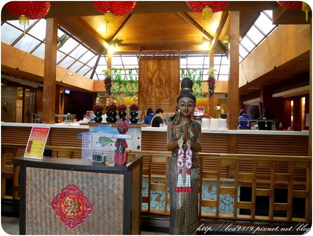
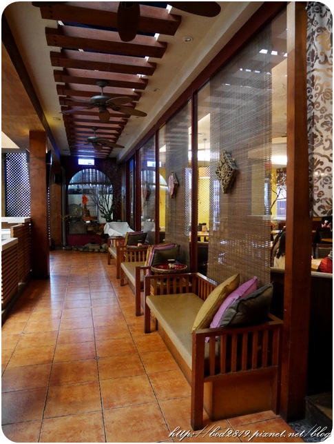
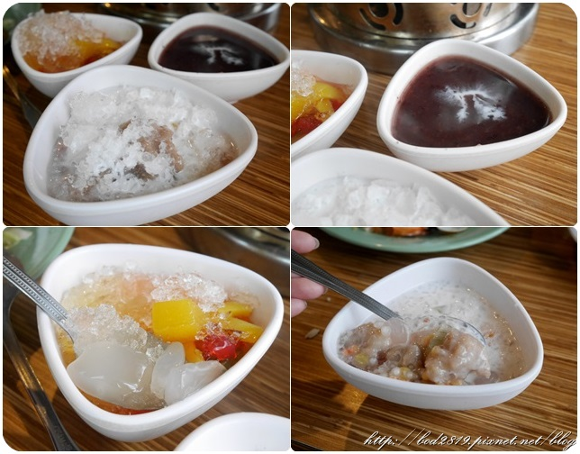

泰味館
地址：桃園市桃園區中山路939號
電話：(03)378-5100
營業時間：平日：11:30~14:30 17:00~22:00；
假日：11:30~16:30 17:00~22:00
消費：平日午餐445；晚餐假日545 (另加收10%服務費)
官網：http://thai-wei.com/
平價泰式料理吃到飽說真的比較少見，
都還是單點居多，且單點下來並不便宜，
所以泰味館吃到飽顯得格外吸引人，
且一樣是單點制、現點現作、絲毫不輸給單點店家，
泰味館位於桃園愛買裡面，隔壁也是餐廳，
外觀顯眼吸引人，一看就知道走異國風味，
消費方式：平日午餐445；晚餐假日545(另收10%)，
以泰式來說並不貴，兩三人在外面隨便吃幾盤就要破千了！
所以四五百的價位吃到飽著實吸引人，
喜歡吃的可以多點幾次都不怕爆預算
外面是停車場，在泰味館消費可以抵三小時停車，
以吃飯來說的時間足夠且充裕，吃完還可以逛逛愛買，

一近門就可以看到特別挑高的天花板，
整個裝潢充滿了東南亞的異國風情
泰味館有許多裝飾還是來自泰國的喔！
也擺了許多小東西作裝飾，

其中這個木雕格外搶眼，
店裡員工的鸚鵡，據說他會說沙瓦迪咖喔！
看起來很活潑很可愛，不過當天他不理我們XD
後方是自助區，自助區後方還有水池(不過沒有水)，
只能說泰味館的空間寬敞又氣派，
其中很特別的是泰味館用泰國的地名來作區隔，
所以店內有湄河區、清邁區、PP島、東象島、芭達雅宴會廳，
當天我們的座位是湄河區，不得不說空間真得很大
洗手間從這邊進去，
洗手間也滿豪華的餒，還有沙發椅可以坐，
自助區，有飲料、白飯沙拉水果等等，
還有在泰國餐廳常看到的容器喔XD
自助區有水果以及沙拉可以享用，
也有泰國進口手工冰淇林，口味滿特別的，
有不常見的榴槤以及椰子，不過那天冷冷的就沒吃了，
甜點是到這邊來點，而非畫單子，
但一樣是吃到飽，現點現做給你

連走道都是濃濃的東南亞風情，
畫單子給店員即可，一次最多畫八種，
雖然是吃到飽但還是不要浪費
也有菜單本可以參考，左邊有必點的菜色，
一開始不知道吃什麼又沒想法的可以參考

酸甜蝦球
這一道我沒有吃，跟一般蝦球口味不一樣，比較特別些，
酸辣海鮮湯
海鮮湯味道重，感覺也是可以配個飯，
酸酸辣辣又帶有香料的風味，

左上-摩摩喳喳：裡面有芋頭、西米露、亞答子，料多口味豐味，
泰國經點甜點之一，想吃幾碗都ＯＫ！
右上-紫米紅豆：天冷想喝點熱的最佳選擇，甜而不膩口，
左下-菠蘿亞答子冰：裡面東西更多，整個色彩繽紛，
亞達子獨特帶Ｑ的口感很迷人，但是加上菠蘿甜度略高些。
不曉得台北有沒有類似的店阿！吃到飽真的很划算，
不過會建議人多一點，兩三人可能有點少，
畢竟人多可以每個都嚐嚐看是否
而且位置多，座位寬敞，挺適合多人聚餐的，
假日加一成服務費約600元，這麼多菜色吃到飽並不貴，
而且上菜都滿快的，不會怕你吃！不過口味偏辣，
怕辣的彭朋友可能要留意一下，因為當天我們都沒選辣度XD
＊本篇為體驗文
引用文章:嵐嵐的愛吃天地